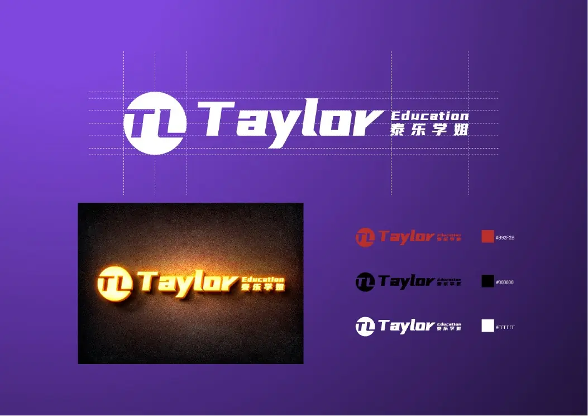

Education branding
Taylor Education
A confident education identity designed to make the organisation easier to recognise across physical and digital environments.
Start a similar project ↗
What the work needed to solve
The brand required a clear, versatile identity that could remain legible across signage, marketing and learning-related communication.
How WellMax shaped the solution
WellMax refined the logo structure, colour usage and practical identity applications into a cohesive visual system.
Have a similar challenge?